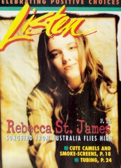

Rebecca Saint James
|  August 1997 Listen |
 September 2002 Christian Music Planet |
 March 2005 Today's Christian Woman |
 November 2006 Christian Single |
 April 2011 CCM Digital |
Media coverage
- Aug 1994 in CCM "Faces to Watch: Rebecca Saint James", by Gregory J. Rumburg
- Dec 1994 in CCM "Poster: Rebecca Saint James"
- Jan 1995 in Christian Single "Featured Artist: Rebecca Saint James"
- Mar 1995 in Campus Life "Meet A Saint", by Harold Smith
- Aug 1995 in CCM "In Concert: UTA Texas Hall, Dallas, TX", by Wynnell Gorman
- Jul 1996 in HM "Hardnews: Rebecca Saint James"
- Aug 1996 in CCM "The Gospel According to St. James", by Marykay Selby
- Aug 1996 in Charisma & Christian Life "Spotlight: Rebecca Saint James", by Jimmy Stewart
- Nov 1996 in Religious Broadcasting "To Touch A Generation", by Sarah E. Smith
- Jan 1997 in Living With Teenagers "It's All About God", by Joy Fisher
- May 1997 in CCM "In Concert: Osceola Baptist Church, Kissimmee, FL", by John M. De Marco
- Aug 1997 in Christian Single "Profile: After God's Own Heart", by Deborah Evans Price
- Aug 1997 in Listen "Nashville by Way of Australia", by Audrey T. Hingley
- Nov 1997 in Campus Life "It's Still All About God", by Chris Lutes
- Nov 1997 in Campus Life "Didgeridoo and Merry Christmas to You!"
- Dec 1997 in CCM "Tis the Season of Rest and Reflection", by Melissa Riddle
- Nov 1998 in CCM "Choir Girl", by Liz Kelly
- Dec 1998 in Living With Teenagers "One Minute Interview: Rebecca Saint James", by Mike Nappa
- Apr 1999 in Charisma & Christian Life "A Saint At Age 21", by Lindy Warren
- Apr 1999 in CCM "On The Beat: Pope Visits St. Louis", by Brian Quincy Newcomb
- May 1999 in CCM Brasil "Ela é um Coral", by Liz Kelly
- Oct 1999 in Living With Teenagers "Profile: Voices of Hope", by Steven James
- Aug 2000 in CCM "Is Christian Music Making a Difference?: Is Christian Music Making a Difference?"
- Oct 2000 in CCM "Brand New Day, Part 2", by Liz Kelly
- Oct 2000 in CCM "This Land Is Your Land", by Gregory J. Rumburg, Sarah Aldridge-McNeece
- Nov 2000 in Campus Life "In Tune With God"
- Nov 2000 in Campus Life "What God Is Teaching Me: What God Is Teaching Me", by Martin Cockroft
- Dec 2000 in CCM "That's Why I'm Here", by Wendy Lee Nentwig
- Feb 2002 in CCM "Valentine's Day: Flying Solo", by Matthew Turner
- Sep 2002 in Christian Music Planet "One: Rebecca St. James", by Deanna Broxton
- Nov 2002 in Campus Life "Rebecca Unplugged", by Mark Moring
- Dec 2002 in CCM "Best Female Artist", by Christina Farris
- Dec 2002 in Living With Teenagers "The Family Resemblance", by Joy Fisher
- Apr 2003 in CCM "Insider: On The Fly: Artists' Special Requests"
- Jun 2003 in CCM "Christian Music's Voice of Virginity Talks About Something Else", by Dan Ewald
- Jun 2003 in CCM "Is Rebecca's Music Really A Hit On A Racy Beach?", by Dan Ewald
- Sep 2003 in CCM "Insider: On The Fly: Artist's Non-Musical Hobbies", by Christina Farris
- Nov 2003 in Campus Life "Rocked by a Hero", by Mark Moring
- Jan 2004 in Campus Life "Singer, Author, Actress", by Mark Moring
- Jan 2004 in CCM "2004 Reader's Choice Awards: Round 2 For Rebecca"
- May 2004 in CCM "5 Questions With: Rebecca Saint James"
- May 2004 in CCM "Standing Room Only: The Adoration Tour", by Andy Argyrakis
- May 2004 in Charisma & Christian Life "A Hit Sound From Down Under", by Adrian Brookes
- Aug 2004 in CCM "'x' Things You Probably Didn't Know About...: Rebecca Saint James", by Michael Nolan
- Mar 2005 in Today's Christian Woman "Balancing Act"
- Apr 2005 in CCM "Listening In: Rebecca Saint James & Evie Tornquist"
- Sep 2005 in CCM "Insider: The Return of Rebecca The Rock Chick", by Andrea Bailey Willits
- Dec 2005 in CCM "How Should She Then Live?", by Melissa Riddle
- Mar 2006 in Ignite Your Faith "What's On My Heart", by Todd Hertz
- Apr 2006 in CCM "!Rock", by Andy Argyrakis
- Jun 2006 in CCM "5 Questions With: Rebecca Saint James"
- Nov 2006 in Christian Single "Dream On", by Melissa Riddle
- Jan 2007 in CCM "The Art of Voting", by Jay Swartzendruber
- Aug 2007 in CCM "Sightings: Surfer's Paradise", by Chris Well
- Jan 2008 in Discipleship Journal "Conversations: 5 Minutes With Rebecca St. James"
- May 2010 in CCM Digital "Hit the Road: She", by Caroline Lusk
- Mar 2011 in CCM Digital "Musicians Corner: In the Studio: Rebecca Saint James", by Andrew Greer
- Apr 2011 in Charisma "Behind The Worship: On 'Song of Life'"
- Apr 2011 in CCM Digital "Lifting Open Hands to You my Savior, Beautify my Soul"
- May 2011 in Christianity Today "Two Minutes With...: Rebecca Saint James"
Albums & reviews:
1994: Rebecca St. James
- Sep 1994 in Moody, by Donna L. Hankins
- Jan 1995 in Christian Single, by L. Joy Kirkland
1995: Extended Play Remixes with Scott Blackwell
- Nov 1995 in CCM, by Jamie Lee Rake
- May 1996 in YouthWorker, by Shawn Dunne
1996: God
- Aug 1996 in CCM, by Lucas W. Hendrickson
- Sep 1996 in Religious Broadcasting, by Darlene A. Peterson
- Oct 1996 in Christian Single, by Mark A Smeby
- Nov 1996 in YouthWorker, by Darren Hills
- Dec 1996 in Living With Teenagers, by Mike Nappa, Amy Nappa
1997: Christmas
- Dec 1997 in Religious Broadcasting, by Darlene A. Peterson
- Dec 1997 in CCM, by Lucas W. Hendrickson
- Jan 1998 in HM, by Brian Vincent McGovern
- Dec 1998 in Living With Teenagers, by Mike Nappa
1998: Pray
- Nov 1998 in Campus Life, by Chris Lutes
- Nov 1998 in CCM, by Lou Carlozo
- Mar 1999 in YouthWorker, by Dave Urbanski
- Mar 1999 in Today's Christian Woman
- Mar 1999 in Christian Single, by Margaret Feinberg
- May 1999 in Church Musician Today, by Shannon Dietor-Hartley
2000: Transform
- Nov 2000 in Campus Life, by Mark Moring
- Nov 2000 in YouthWorker, by Dave Urbanski
- Nov 2000 in CCM, by Dave Urbanski
- Jun 2001 in Christian Single, by Lou Carlozo
2002: Worship God
- Apr 2002 in CCM, by Steve Knight
- May 2002 in YouthWorker, by Dave Urbanski
- May 2002 in Charisma & Christian Life, by Adrienne S Gaines
- Jul 2002 in Today's Christian Woman, by Amy M Tatum
2003: Wait For Me: The Best From Rebecca St. James
2004: Live Worship: Blessed Be Your Name
- Mar 2004 in CCM, by Andy Argyrakis
- Jul 2004 in YouthWorker, by Dave Urbanski
- Oct 2004 in Living With Teenagers, by Joy Fisher
2006: If I Had One Chance To Tell You Something
- Jan 2006 in Worship Leader
- Jan 2006 in CCM, by Andrea Bailey Willits
- Jan 2006 in Christian Music Planet, by Beau Black
- Mar 2006 in Today's Christian Woman, by Lisa Ann Cockrel
- May 2006 in Christian Single, by Andy Argyrakis
2011: I Will Praise You
- Apr 2011 in CCM Digital, by Andrew Greer
- May 2011 in Worship Leader, by Jason Whitehorn
- Sep 2011 in Living With Teenagers, by Randy Williams
2022: Kingdom Come
Award Summary (Nominations / Wins)
Dove Awards- Female Vocalist
- Female Vocalist
- Song: "Wait For Me"
- Female Vocalist
- Short Form Music Video: "Reborn"
- Rap/Hip Hop/Dance Recorded Song: "Reborn"
- Modern Rock/Alternative Recorded Song: "For The Love Of God"
- Female Vocalist
- Praise & Worship Album: Worship God
- Short Form Music Video: "Wait For Me"
- Female Vocalist
- Female Vocalist
- Best Rock Gospel Album: Pray
- 1997 Billboard Music Video Awards
- Best Clip, Contemporary Christian: "You're The Voice"
Published articles
Books about Rebecca Saint James
- "Rebecca St. James" in The Encyclopedia of Contemporary Christian Music (Mark Allan Powell, 2002).
- "Testimonies: Interviews With Christian Artists" in The Billboard Guide to Contemporary Christian Music (Barry Alfonso, 2002).
- "Rebecca St. James" in The Billboard Guide to Contemporary Christian Music (Barry Alfonso, 2002).
© 2011 CMnexus. Last updated August 2025. Contact: editor -AT- cmnexus -DØT- org